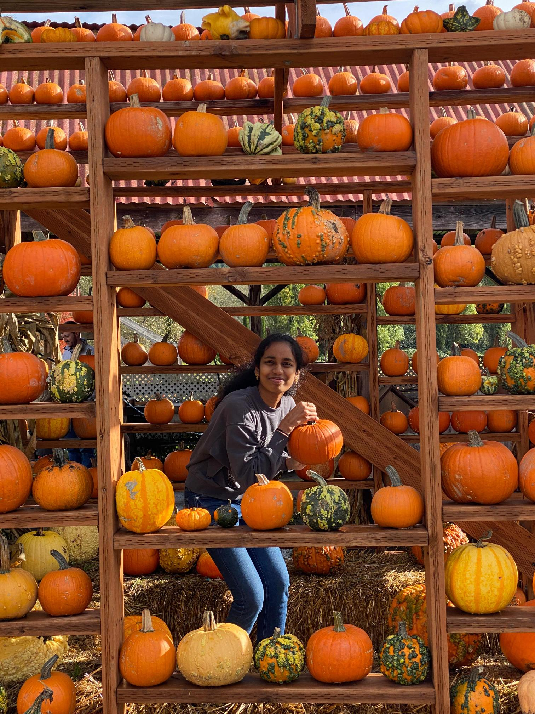
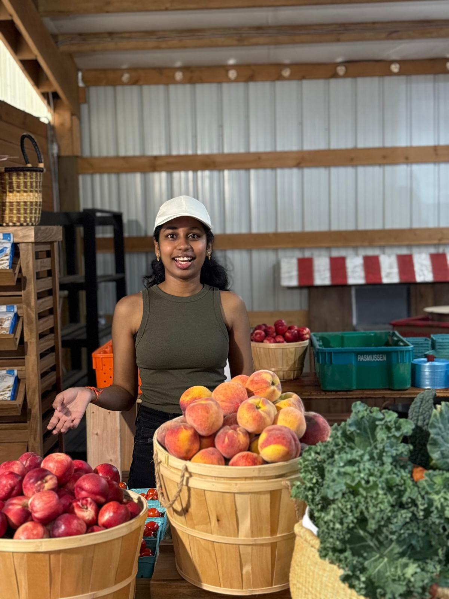

05 BEYOND WORK
A little more
A little more
human.
This is a little space for everything beyond my professional work — the experiences, interests, and everyday moments that shape who I am.
There's always more to a person than a resume, and this is where I'll share a little more of that.
Let's connect
